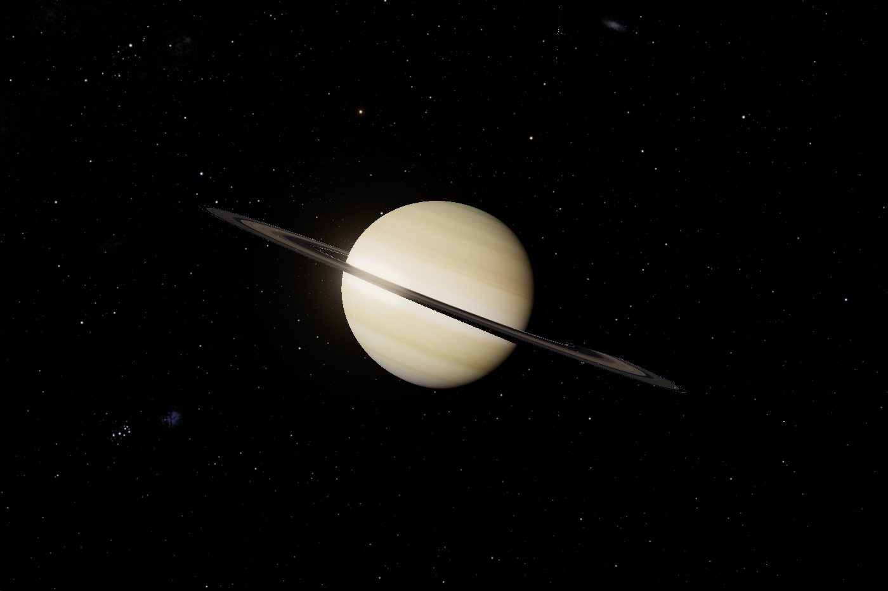

True scale, no cheating
Bodies are placed by ephemeris at their real separations and drawn at their real radii. The camera crosses thirteen orders of magnitude without a loading screen or a hidden change of units — the depth buffer is logarithmic so a rover and a gas giant can share one frame.